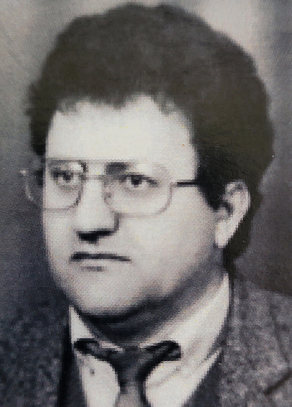

DRUGA GRANA PRVE OBITELJI TANDARA
2.0. Petar Tandara (1734–1817)
Pretražite cijelu Petrovu granu
Interaktivna pretraga prihvaća više kriterija istodobno: ime, godinu, roditelje, supružnika, mjesto, nadimak ili osobnu oznaku. Moguć je i unos bez kvačica.
Petar Tandara je bio Ivanov drugi sin. Umro je 1817. godine u osamdeset i trećoj godini života, pa se procjenjuje da je rođen c. 1734. godine. Petar je bio oženjen Jelom Budić. Imali su sinove Grgu, Jakova, Martina, Marijana, Miju, Tadiju i Marka, te kćeri Mandu i Jelu. Sinovi Jakov, Marijan i Marko ne pojavljuju se na Popisu duša iz 1806. godine, a Tadija je izostavljen s popisa iz 1819. godine, pa se može pretpostaviti da više nisu bili među živima ili je netko od njih odselio iz Ričica. Mijo Petrov nije imao muške potomke i njegova je grana izumrla.
2.1. Grgo Petrov (1770.- )
Grgo, najstariji Petrov sin, oženio je Ružu Pušić. Imali su sina Šimuna i kćer Ivu.
2.1.1. Šimun Grgin (1800.-1874.)
Šimun je bio oženjen Jelom Budimir s kojom je imao sina Matu, te kćeri Ivu, Matiju i Martu. O sinu Mati postoje samo podaci o godini rođenja, pa se ne može utvrditi njegov daljnji životni put niti okolnosti koje su dovele do toga da o njemu nema sačuvanih zapisa.
2.2. Martin Petrov (1775.-1844.)
Martin, treći Petrov sin, oženio se Ružom Lekić. Imali su sinove Ivana, Juru, Miju, Grgu, Filipa i Josipa, te kćeri Matiju i Anu. Za Juru, Filipa i Josipa nisu pronađeni drugi zapisi osim onih o njihovu krštenju, pa nije poznato jesu li umrli mladi ili su se odselili. Sinovi Ivan i Grgo su jedini nastavili lozu.
2.2.1. Ivan Martinov (1807.-1877.)
Ivan, najstariji Martinov sin, oženio se 1826. Anticom Lažeta. Ivan i Antica imali su tri sina: Marijana, Tomu i Juru te kćeri Ružu, Ivu, Jozu i Matiju. Marijan je umro kao malo dijete. O Juri nisu pronađeni drugi podaci osim zapisa o njegovu rođenju. Toma je bio jedini nasljednik Ivanove loze i začetnik Tromića.
2.2.2. Mijo Martinov (1814.- )
Treći Martinov sin i njegova žena Matija rođ. Parlov imali su osmero djece: dva sina, Martina i Miju, koji je umro kao malo dijete, te kćeri Lucu, Mandu, Božu, Jozu, Mariju i Matiju. O Martinu nema drugih zapisa osim onoga o njegovu rođenju. Ne zna se je li umro ili se odselio. Nakon Martina ugasila se Mijina loza.
2.2.3. Grgo Martinov (1818.- )
Grgo se ženio dvaput. Iz prvog braka s Rosom rođ. Budimir imao je sina Lovru i kćer Jaku. U drugom braku s Jakom rođ. Knežević, Grgo je imao sinove Matu (koji je umro kao malo dijete) i Miju, te kćeri Matiju, Jozu i Veroniku.
POČETAK MIGRACIJA IZVAN RIČICA
Godine 1819. obitelj Martina Tandare, Lovrina djeda, bila je u Zavelimu. Na tom su popisu navedeni Martinovi sinovi Ivan, Mijo i Grgo. Kad se 1835. radio austrijski katastar, Martin Tandara pok. Petra upisan je kao posjednik nekretnina u Ričicama. Većina ričićkih plemena imala je u to vrijeme nekretnine u Ričicama, Zavelimu, Podbiloj i Viru. Navedena sela imala su zajedničku župu u Ričicama. Mnoge obitelji unutar jednog roda selile su se s jednog lokaliteta na drugi, čak i u samim Ričicama. Broj stanovnika je naglo rastao i tražili su se novi prostori za život. U tom kontekstu možemo razumjeti i prihvatiti činjenicu da je neka obitelj, ili njezin dio, u jednom popisu bila u Ričicama, a kod sljedećeg u Zavelimu ili obrnuto. Međutim, pouzdano se zna da se Grgo s djecom iz Zavelima vratio u Ričice i ondje nastavio život sa svojom obitelji.
TROMIĆI
2.2.1.1. Toma Ivanov (1830.- )
Toma je bio oženjen Tomicom Kovač. Imali su sinove Ivana, Matu, Juru i ponovno Ivana, koji je preminuo kao dijete. Jedini Tomin nasljednik bio je sin Jure. Tomina loza u Zavelimu bila je poznata pod nadimkom Tromići, nastalim prema predaji o njihovoj visini i sporom, tromom hodu.
LOZA JURE TOMINA
2.2.1.1.1. Jure Tomin (1874.-1931.)
Treći Tomin sin i jedini nasljednik uzeo je za ženu Ivu Lažeta. Imali su sinove Tomu i Ivana (koji su umrli kao mala djeca), zatim Pia, Dominika i Matu, te kćer Matiju.
2.2.1.1.1.1. Pio Jurin (1916.–1990.)
Pio, treći Jurin sin, uzeo je za suprugu Tereziju Budimir s kojom je dobio sinove Ivana, Juru i Jozu, te kćer Maru.
2.2.1.1.1.1.1. Ivan Piin (1935.–2025.)
Ivan je oženio Marijanu Petter s kojom je dobio sina Dina i kćer Romanu. Obitelj danas živi u Zagrebu.
2.2.1.1.1.1.1.1. Dino Ivanov
Dino je oženio Matildu Klepikapić s kojom ima kćeri Hedvigu, Leonardu i Luciju. Nema muških potomaka. Obitelj živi u Zagrebu.
2.2.1.1.1.1.2. Jure Piin (1943.-2004.)
Bio je oženjen Milom Škorić s kojom je dobio sina Tomislava i kćeri Mariju, Angelu i Nediljku. Tomislav se nije ženio. Obitelj danas živi u Splitu.
2.2.1.1.1.1.3. Jozo Piin (1949.- )
Jozo je oženio Mirjanu Generalić s kojom ima sina Domagoja i kćeri Terezu i Zrinku. Obitelj živi u Splitu.
2.2.1.1.1.2. Dominik Jurin (1919.–1987.)
Četvrti Jurin sin je oženio Maru Knezović i s njom dobio sinove Antu, Barišu, Nikolu, Pia, Svetu i Ivana, te kćer Olgu. Ante, Nikola, Pio i Sveto nemaju mušku djecu. Za Barišu nema podataka o ženidbi. Jedino Ivan sa sinovima je nasljednik Dominikove loze.
2.2.1.1.1.2.1. Ante Dominikov (1948.– )
Ante je oženio Dubravku Pencinger s kojom je dobio kćeri Anu Mariju i Ozanu. Obitelj živi u Križevcima.
2.2.1.1.1.2.2. Bariša Dominikov (1950.– )
O Bariši još nema podataka.
2.2.1.1.1.2.3. Nikola Dominikov (1953.– )
Nikola je oženio Nadu Jurčević s kojom je dobio kćeri Marijanu, Ivu, Brigitu i Anitu. Nikola se vratio u selo Tandare u Zavelimu.
2.2.1.1.1.2.4. Pio Dominikov (1954.– )
Pio se oženio Ljubinom Krinulović s kojom je dobio kćeri Tinu i Piu. Obitelj živi u Beču, Austrija.
2.2.1.1.1.2.5. Sveto Dominikov (1957.- )
Sveto se dvaput ženio. U prvom braku s Petrom Lukić dobio je kćer Danielu. U drugom braku s Verom Rakin dobio je kćer Eni.
2.2.1.1.1.2.6. Ivan Dominikov (1963.- )
Ivan Dominikov je oženio Mirjanu Tandara s kojom ima sinove Dominika i Davida. Obitelj živi u selu Tandare u Zavelimu.
2.2.1.1.1.3. Mate Jurin (1922.–1963.)
Mate, peti Jurin sin, oženio je Maru Budić s kojom je dobio sinove Tomislava i još dvojicu sinova koji su umrli u petoj godini života, te kćer Matiju.
2.2.1.1.1.3.1. Tomislav Matin (1947.-2014.)
Oženio je Božicu Golubiček s kojom ima sina Matu i kćer Martinu.
2.2.1.1.1.3.1.1. Mate Tomislavov (1980.- )
Oženio je Ivanu Trošelj s kojom je dobio kćer Tenu. Potomci Mate Jurina danas žive u Zagrebu.
LOZA LOVRE GRGINA
2.2.3.1. Lovro Grgin (1842.-1922.)
Lovro je oženio Ivu Parlov s kojom je dobio sinove Antu i Marijana te kćeri Luciju (koja je umrla kao dijete), Ivu i ponovno Luciju. Ante i Marijan bili su jedini nasljednici loze. Njihovi su sinovi imali trideset i troje djece. U Matičnoj knjizi umrlih župe Ričice zapisano je da su Lovrinu kćer Lucu u trinaestoj godini života „ubile stine“.
2.2.3.1.1. Ante Lovrin (1871.-1933.)
Ante Lovrin bio je oženjen Tomicom Lukić i s njom je imao sinove Ivana, Marijana, Matu prvog (koji je umro kao dijete), Matu drugog i Nikolu, te kćeri Martu, Ivu i Matiju. Nasljednici loze bili su Ivan, Marijan, drugi sin Mate, i Nikola.
2.2.3.1.1.1. Ivan Antin (1896.- )
Najstariji Antin sin oženio se Marom Mršić. Imali su sinove Lovru, Mirka, Matu, Antu Vladu i Nikolu, te kćer Tomicu. Ivan je odselio u Slatinu, a Ivanovi potomci danas žive u Predavcu kod Bjelovara, Slatini, Obrovcu, Zagrebu i Njemačkoj.
2.2.3.1.1.2. Marijan Antin (1898.-1933.)
Drugi Antin sin bio je u braku s Milicom rođ. Mikulić i imao je sinove Franu (koji je poginuo u Beču 1945. u osamnaestoj godini života) i Antu (koji je umro kao malo dijete), te kćeri Mariju i Stanu. Marijan je umro od upale pluća u trideset i petoj godini života. Marijanovi sinovi nisu imali potomaka, pa se njegova loza ugasila.
2.2.3.1.1.3. Mate Antin (1910.-1991.)
Četvrti Antin sin, Mate, bio je oženjen Marom Knežević. Imali su sinove Antu Brunu i Franu, te kćeri Anu, Dinku i Olgu.
2.2.3.1.1.4. Nikola Antin (1919.-1981.)
Peti Antin sin Nikola bio je oženjen Tomicom Budimir, s kojom je imao sinove Antu, Dragu, Jerka i Ivana te kćeri Matiju, Branku i Mariju. Jerko je bio oženjen Stankom Racetin, s kojom je imao kćer Anu. Drago je jedini nasljednik loze i njegovi sinovi danas žive u Ričicama.
2.2.3.1.1.1.1. Lovre Ivanov (1925.- )
Lovre je bio najstariji Ivanov sin. Sa suprugom Rozikom Peška dobio je dvije kćeri, Šteficu i Anu.
2.2.3.1.1.1.2. Mirko Ivanov (1928.- )
Mirko je oženio Danicu Lukić s kojom je dobio sinove Ivana i Veselka, te kćer Mirjanu. Obitelj živi u Predavcu kraj Bjelovara.
2.2.3.1.1.1.2.1. Ivan Mirkov (1961.- )
Stariji Mirkov sin Ivan oženio je Nadu Kegalj i s njom dobio sinove Roberta i Kristijana. Obitelj živi u Predavcu kraj Bjelovara.
2.2.3.1.1.1.2.2. Veselko Mirkov (1964.- )
Mlađi Mirkov sin Veselko oženio je Martinu Hohmann i s njom ima sina Mirka i kćer Janinu. Obitelj živi u Predavcu.
2.2.3.1.1.1.3. Mate Ivanov (1932.-1970.)
Treći Ivanov sin oženio se Marijom Srebrnjak, s kojom je imao samo kćer Sandru.
2.2.3.1.1.1.4. Ante Vlade Ivanov (1934.- )
Četvrti Ivanov sin, Ante Vlade, ženio se dva puta. U prvom braku s Karinom Mesch dobio je sinove Johana i Franza te kćer Veroniku. U drugom braku s Tonkom Zanne nije imao djece.
2.2.3.1.1.1.4.1. Johan Ante Vladin (1960.- )
Johan i njegova supruga Katarina Koniks imaju sina Gerda i kćer Maditu. Obitelj živi u Njemačkoj.
2.2.3.1.1.1.4.2. Franz Ante Vladin (1966.- )
Franz je oženio Honolore Genesen s kojom ima sina Marvina. Obitelj živi u Njemačkoj.
2.2.3.1.1.3.1. Ante Bruno Matin (1937.-1989.)
Doktor Bruno rođen je 7. listopada 1937. u Ričicama. Godine 1968. oženio se Vanjom Brkljača i s njom dobio sina Zvonimira, te kćeri Zrinku i Tomislavu.
Dr. Ante Bruno Tandara (1937.–1989.) bio je hrvatski liječnik, narodni zastupnik u Saboru SR Hrvatske i sudionik Hrvatskog proljeća. Na izborima 1969. godine izabran je za zastupnika, a nakon sloma Hrvatskog proljeća oduzet mu je zastupnički imunitet.
Zbog svojega političkog djelovanja bio je uhićen i osuđen na dvije godine i četiri mjeseca strogog zatvora, koje je služio u Staroj Gradiški.

2.2.3.1.1.3.1.1. Zvonimir Ante Brunin (1973.- )
Zvonimir Brunin je oženio Anetu Gacek s kojom ima sina Oskara. Obitelj živi u Supetru na Braču.
2.2.3.1.1.3.2. Frane Matin (1947.- )
Mlađi Matin sin Frane oženio se Matijom Topalušić. Imali su sinove Matu i Antu te kćer Elzu. Žive u Ričicama.
2.2.3.1.1.3.2.1. Mate Franin (1973.- )
Mate se oženio Anom Marijom Vlahović s kojom ima sinove Antu i Franu, te kćer Leonardu. Obitelj živi u Ričicama.
2.2.3.1.1.4.1. Drago Nikolin (1952.- )
Drago sa suprugom Zdenkom Budimir dobio je dva sina, Nikolu (1976.- ) i Ivicu (1978.-). Sin Nikola Tandara je svećenik monfortanac u Poljskoj. Obitelj živi u Ričicama.
2.2.3.1.1.4.1.1. Ivica Dragin (1978.- )
Ivica sa suprugom Jelenom Perić ima sina Nikolu i kćer Lauru. Žive u Ričicama.
2.2.3.1.1.4.2. Jerko Nikolin (1953.- )
Treći Nikolin sin oženio je Stanku Racetin s kojom ima kćer Anu. Muških potomaka nema.
LOZA MARIJANA LOVRINA
2.2.3.1.2. Marijan Lovrin (1881.-1939.) - nadimak potomaka: LOVRIĆI
Marijan je oženio Lucu Parlov s kojom je dobio sinove Miju, Marina, Petra i Ivana te kćeri Matiju, Anu, Ivu i Tomicu. Ivan je umro nedugo nakon rođenja.
2.2.3.1.2.1. Mijo Marijanov (1908.- )
Najstariji Marijanov sin Mijo bio je u braku sa Slavkom Sablić s kojom je dobio devetero djece: sinove Vinka, Ivana (koji je umro nakon poroda), Milana, Marijana i ponovno Ivana (koji je umro u dobi od dvije godine), te kćeri Milu-Ivu, Anicu, Nadu i Macu. Samo su sinovi Vinko, Milan i Marijan nastavili Mijinu lozu. Vinkovi i Milanovi potomci danas žive u Ričicama, Splitu, Zagrebu, Austriji i Njemačkoj.
2.2.3.1.2.1.1. Vinko Mijin
Vinko je oženio Maru Dragicu Budimir s kojom je dobio sinove Milenka (umro kao jednogodišnjak) i Svetka, te kćeri Dragicu i Milosavu.
2.2.3.1.2.1.1.1. Svetko Vinkov
Svetko je oženio Nevenku Tavra s kojom je dobio sina Kristijana.
2.2.3.1.2.1.2. Milan Mijin
Milan Mijin je oženio Stanu Tandara s kojom je dobio tri sina: Nediljka, Željka i Tihomira te kćer Slavicu.
2.2.3.1.2.1.2.1. Nediljko Milanov (1962.- )
Nediljko je oženio Vesnu Mandić s kojom je dobio sina Milana, te kćeri Anu Mariju i Elizabetu.
2.2.3.1.2.1.2.2. Željko Milanov (1967.-2020.)
Željko je oženio Valeriju Glavota s kojom je dobio tri kćeri: Mihaelu, Mariju i Stanu. Muških potomaka nije imao.
2.2.3.1.2.1.2.3. Tihomir Milanov (1969.- )
Tihomir je oženio Anicu Miloš s kojom je dobio sinove Milana i Ivana.
2.2.3.1.2.1.3. Marijan Mijin (1942.- )
Marijan je oženio Milenku Budimir i s njom ima sina Marija i kćer Silvanu.
2.2.3.1.2.1.3.1. Mario Marijanov (1974.- )
Mario je oženio Jasminku Ilić i nema muških potomaka koji bi nastavili lozu.
2.2.3.1.2.2. Marin Marijanov (1912.-1989.)
Marin je oženio Matiju Žuljić s kojom je dobio sinove Marijana (koji je umro u dobi od dvije godine), Alojza, Luku (koji je umro kao jednogodišnje dijete), Vicu i Blaža, te kćeri Dragicu, Nevenku i Anku. Marinovi potomci danas žive u Ričicama, Splitu, Zagrebu i Njemačkoj.
2.2.3.1.2.2.1. Alojz Marinov
Alojz je oženio Dragicu Jurčević s kojom ima sina Roberta i kćer Zrinku.
2.2.3.1.2.2.1.1. Robert Alojzov
Robert je oženio Sabinu Patzak s kojom ima sina Marca Marina i kćeri Carolinu Victoriu i Lauru Nadine.
2.2.3.1.2.2.2. Vice Marinov (1949.- )
Vice Marinov je oženjen Ružicom Barnjak s kojom nema djece. Vicu navodim kao zaslužnog pojedinca za pokretanje ovog projekta.
2.2.3.1.2.2.3. Blaž Marinov
Blaž je oženio Zoranu Čariju s kojom je dobio tri sina: Marija, Antu i Vicu. Vice se nije ženio.
2.2.3.1.2.2.3.1. Mario Blažev
Mario je oženio Josipu Artić s kojom ima sina Lovru i kćer Tonku.
2.2.3.1.2.2.3.2. Ante Blažev
Ante je oženio Tanju Koren s kojom ima sina Petra. Obitelj živi u Ričicama.
2.2.3.1.2.3. Petar Marijanov (1915.- )
Petar je oženio Zorku Pavić s kojom je dobio sina Antu (koji je umro nedugo nakon poroda), te kćeri Milu, Mariju, Ankicu, Miru, Zorku i Rosu. Petar nije imao nasljednika loze.
2.2.3.2. Mijo Grgin (1856.-1933.)
Treći Grgin sin Mijo oženio je Ivu Tandara, s kojom je dobio sedmero djece: sinove Martina, prvog Nikolu, Matu i drugog Nikolu te kćeri Ivu, prvu Maru i drugu Maru. Martin je umro u dobi od 19 godina, a prvi Nikola i Mate umrli su kao mala djeca. O drugom Nikoli nema drugih podataka osim zapisa o njegovu rođenju. Ni za jednoga Mijina sina nema podataka o tome da se ženio ili imao djecu, pa se Mijina grana ugasila.
2.3. Mijo Petrov
Mijo Petrov oženio je Ružu nepoznatog prezimena i s njom imao kćer Matiju. Budući da nije imao muških potomaka, njegova se loza prekinula.
Napomena!
Kompletno rodoslovno stablo ove obiteljske grane nalazi se u desnom interaktivnom dijagramu na početnoj stranici Digitalnog arhiva roda Tandara.
Odaberite prvii red, zatim drugi okvir u gornjem redu stabla pod nazivom "Petrova grana". Klikom na taj okvir otvara se odgovarajući dio rodoslovnog stabla s potomcima ove grane.